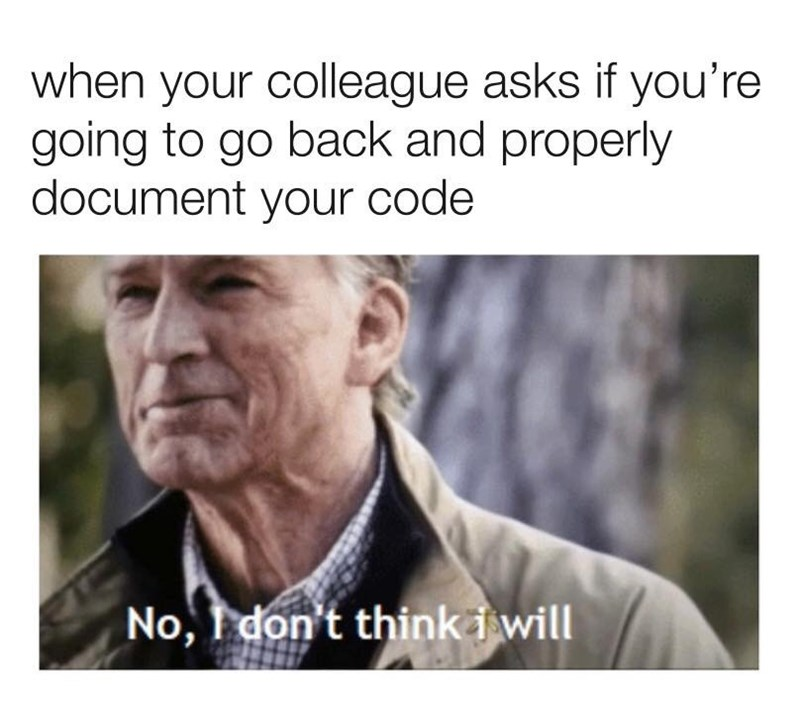
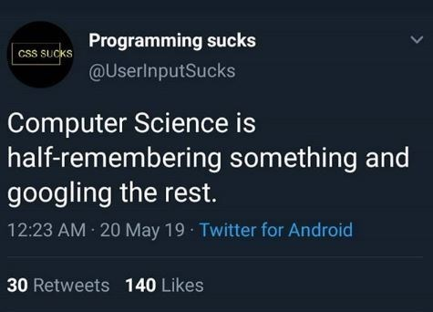

A little about me
Initially starting my college career as a Chemical Engineering major, I found myself taking intensive science courses and dreading the 45 minute to an hour long drive to school for other reasons other than traffic. After about a semester and a half I was convinced that Chemical Engineering was not the path that I would be taking and chose to research alternatives. With that, I remembered how I used to thoroughly enjoyed Web Design and even looking/helping my friends with their Computer Science homework in high school. Thus, I began my path towards pursuing a Bachelor’s degree in Computer Science. Now here I am, 4 years in with experience and familiarity with Python, Java, C++, SQL, HTML, CSS, and JavaScript. Through my Computed Science college career I grew to be interested in the world of databases and Data Science.
Some hobbies of mine include playing basketball and football, being a tortured fan of the Houston Rockets and Houston Texans, listening to music, spending time with close friends and family, and watching tv shows and movies of many genres. I hope this site makes your Computer Science path a lil easier and a bit more enjoyable! Enjoy the selection of memes below that I feel map out my journey into the world of programming.
- 

- 